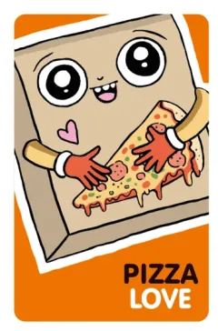
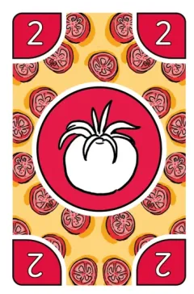

Tłumaczenie maszynowe – jeszcze niesprawdzone przez rodzimego użytkownika języka. Report a translation error
Gra karciana Pizza Love®
Trzy gry jedną talią. Zacznij od Pizza Party – najszybciej się jej nauczysz.
- 2–5 graczy
- 6+
- 42 karty pizzy
- 58 kart dodatków
- 5–15 min
Jak przygotować pizzę

Karty pizzy
Na karcie pizzy jest pizza z jednym do czterech różnych dodatków. W rogach karty jest wartość pizzy (1–10). W grze jest 10 pizz z sercem o wartości 10.

Karty dodatków
Na karcie dodatku jest jeden dodatek. W rogach karty jest wartość dodatku (1–10). 3 dodatki fantazyjne (X) mogą być dowolnym dodatkiem.
Podstawowa zasada
Karty pizzy zawsze leżą na stole. Przygotowuje się je kartami dodatków z ręki.
Wartość pizzy
Przygotuj pizzę własnymi kartami dodatków i powiedz na głos działanie, które daje wartość pizzy. Wszystkie działania są dozwolone i można je łączyć, jeśli wynik jest równy wartości pizzy. Na przykład 5 = 10 : 2.
Przykład: pizza z pomidorem i ananasem
 =
=
 :
:

Wartość pizzy to 5. Możesz ją przygotować dowolnymi kartami dodatków, jeśli wynik działania to 5: na przykład 4 + 1, 6 – 1, 2 + 3 albo 10 : 2.
Każde działanie się liczy
Oprócz dodawania, odejmowania, mnożenia i dzielenia możesz też używać potęg, logarytmów lub silni, na przykład 5 = 2² + 1 lub 5 = 3! – 1. Każdy liczy na swoim poziomie.
Trzy sposoby przygotowania pizzy
Sposoby różnią się tym, jakich kart dodatków możesz użyć. We wszystkich przykładach jest ta sama pizza: z pomidorem i ananasem, wartość 5.
1. Dowolne dodatki
#1 Pizza Party
Użyj dowolnych kart dodatków, ile chcesz – nawet tylko jednej. Liczy się tylko wartość.
5 = 5 · 5 = 4 + 1 · 5 = 7 + 6 - 8
2. Sposób małpki Basso
#1 Pizza Party (dodatkowe wyzwanie) · #2 Pizza Basso
Użyj tylu różnych dodatków, ile ma pizza. Nie muszą to być dodatki tej pizzy. Kart może być więcej, na przykład dwie takie same.
Wypróbuj to także w #1 Pizza Party: gra staje się zabawniejsza, choć trochę trudniejsza.
Pizza z pomidorem i ananasem ma dwa dodatki, więc jedna karta nie wystarczy.
5 = 10 : 2 · 5 = 2 + 2 + 1
3. Właściwe dodatki
#3 Pizza Love
Przygotuj pizzę dokładnie z jej własnymi dodatkami.
Do pizzy z pomidorem i ananasem potrzebujesz pomidora i ananasa.
5 = 2 + 3
Bruno czy Basso? Małpka w grze nazywa się teraz Basso. W starszych zasadach i filmach nazywa się Bruno, a drugi wariant gry to Pizza Bruno. Zasady są takie same.
Trzy sposoby gry
Otwórz wariant gry, aby zobaczyć jego zasady i filmy.
#1Pizza PartyNajłatwiejsza na początek, szybka i dynamiczna · ok. 5 min
1. Dowolne dodatki2. Sposób małpki Basso
Filmy
Cel gry
Gracze przygotowują pizze na wyścigi. Wygrywa ten, kto przygotuje najwięcej pizz, zanim skończą się karty pizzy lub karty dodatków.
Przygotowanie gry
- Potasuj karty pizzy i połóż je w stosie w zasięgu wszystkich graczy.
- Potasuj karty dodatków i rozdaj każdemu graczowi 5 kart. Pozostałe karty tworzą stos do dobierania. Gracze mogą oglądać swoje karty.
Początek gry
Odkryj pierwszą kartę pizzy obok stosu. Wszyscy gracze od razu próbują przygotować tę pizzę swoimi kartami dodatków.
Przebieg gry
- Gra toczy się bez tur: wszyscy próbują przygotowywać pizze jednocześnie.
- Pizzę przygotowujesz, uderzając swoimi kartami dodatków w pizzę na stole i mówiąc działanie na głos. Najszybszy gracz bierze kartę pizzy i kładzie ją przed sobą.
- Jeśli kilku graczy uderzy kartami jednocześnie, pizzę dostaje gracz, którego karty leżą na samym dole.
- Zużyte karty dodatków usuwa się z gry. Dobieraj nowe karty, aż znów będziesz mieć 5 kart w ręce.
- Od razu odkryj nową kartę pizzy. Kontynuuj, aż skończą się karty pizzy lub karty dodatków i nikt nie będzie mógł już przygotować pizzy.
Gdy nie da się przygotować pizzy
Jeśli nikt nie może lub nie chce przygotować pizzy leżącej na stole, odkryj na niej nową kartę pizzy. Gracz, który przygotuje następną pizzę, bierze wszystkie pizze leżące na stole.
Punktacja i zwycięstwo
Pizza daje tyle punktów, ile ma dodatków. Pizza z sercem daje jeden dodatkowy punkt. Na przykład pizza z pomidorem i ananasem = 2 punkty.
Rundę wygrywa gracz z największą liczbą punktów. Ustalcie, ile rund gracie – na przykład ten, kto pierwszy wygra 3 lub 5 rund, wygrywa całą grę.
Spokojniejsza Pizza Party
Możecie też grać w turach, aby każdy miał czas na zastanowienie się w swojej turze.
Zasady opcjonalne
Możecie ustalić zasady, które ograniczają działania, na przykład:
- gramy tylko z dodawaniem i odejmowaniem
- w każdej pizzy trzeba użyć mnożenia lub dzielenia.
#2Pizza BassoSpokojna i emocjonująca · ok. 7 min
Filmy
Cel gry
Gracze próbują opróżnić rękę, czyli pozbyć się wszystkich kart dodatków z ręki. Kto zrobi to pierwszy, wygrywa rundę.
Uwaga: Pizze przygotowuje się sposobem małpki Basso.
Przygotowanie gry
- Potasuj karty pizzy i połóż je w stosie w zasięgu wszystkich graczy.
- Potasuj karty dodatków i rozdaj każdemu graczowi 7 kart. Pozostałe karty tworzą stos do dobierania. Gracze mogą oglądać swoje karty.
Początek gry
Odkryj pierwszą kartę pizzy obok stosu. Zaczyna gracz, który ostatnio jadł pizzę.
Przebieg gry
Gracze w swojej turze próbują przygotować pizzę leżącą na stole swoimi kartami dodatków.
A) Jeśli ci się uda: usuń zużyte karty dodatków z gry i odkryj nową kartę pizzy ze stosu na poprzedniej. Tura przechodzi na następnego gracza.
B) Jeśli nie możesz lub nie chcesz przygotować pizzy: dobierz jedną kartę dodatku. Tura przechodzi na następnego gracza.
C) Ostatnia karta w ręce: gdy zostanie ci tylko jedna karta dodatku, zachowuj się jak głodna małpka Basso i krzyknij: „PIZZAAA!”
Gdy skończą się karty dodatków
Potasuj usunięte z gry karty dodatków, utwórz z nich nowy stos do dobierania i kontynuuj.
Punktacja i zwycięstwo
Rundę wygrywa gracz, który pierwszy pozbędzie się wszystkich swoich kart dodatków. Zsumuj wartości kart, które zostały w rękach pozostałych graczy – ta suma to punkty zwycięzcy. Zwykły dodatek liczy się według swojej wartości (1–10), dodatek fantazyjny to 20.
Kto pierwszy zdobędzie 100 punktów, wygrywa i otrzymuje tytuł Pizza Basso – prawdziwa pizzowa małpa.
Krótsza gra
Możecie ustalić, że gra kończy się na przykład przy 30 lub 50 punktach albo że całą grę wygrywa ten, kto pierwszy wygra 3 lub 5 rund.
#3Pizza LoveNajbardziej taktyczna i wymagająca, 8+ · ok. 15 min
Cel gry
Gracze próbują przygotować wszystkie swoje pizze przed innymi. Kto zrobi to pierwszy, wygrywa.
Uwaga: Teraz liczą się dodatki: pizzę można przygotować tylko z właściwymi dodatkami.
Przygotowanie gry
- Potasuj karty pizzy i rozdaj każdemu graczowi 8 kart. Gracze kładą je przed sobą w zakrytym stosie i odkrywają wierzchnią kartę.
- Połóż jedną kartę pizzy odkrytą na środku stołu. To pizza do wymiany. Pozostałe karty pizzy usuń z gry.
- Potasuj karty dodatków i połóż je na stole jako stos do dobierania.
Magazyn
Każdy gracz ma 4 miejsca w magazynie. Karty dodatków w magazynie leżą odkryte. Możesz ich używać do własnych pizz tak samo jak kart z ręki, a inni gracze mogą ich używać do wymian.
Początek gry
Zaczyna gracz, który ostatnio jadł pizzę. Dobiera on 5 kart dodatków na rękę.
Przebieg gry
- Dobieraj karty dodatków, aż będziesz mieć 5 kart w ręce.
- Spróbuj przygotować wierzchnią pizzę ze swojego stosu kartami z ręki i z magazynu.
- Możesz wymieniać karty ze swojego magazynu na karty z magazynu innego gracza za pomocą działań.
- Raz w turze możesz zamienić miejscami wierzchnią pizzę ze swojego stosu i pizzę do wymiany: twoja pizza zostaje na środku jako nowa pizza do wymiany, a pizza do wymiany trafia na wierzch twojego stosu. Otrzymaną pizzę możesz od razu przygotować.
- Na koniec tury połóż jedną kartę dodatku z ręki odkrytą w swoim magazynie.
Uwaga: Jeśli pozbędziesz się wszystkich kart z ręki, zanim położysz kartę w magazynie, dobierz 5 nowych kart i kontynuuj turę.
Przygotowanie pizzy
Gdy masz potrzebne dodatki w ręce i/lub w magazynie, przygotuj pizzę. Kartę pizzy i zużyte karty dodatków usuwa się z gry. Odkryj następną kartę pizzy ze swojego stosu – jeśli masz do niej dodatki, możesz ją od razu przygotować.
Pizza z sercem
Gdy przygotujesz pizzę z sercem, daj swoją następną kartę pizzy (bez patrzenia na nią) innemu graczowi. Kładzie on ją na spód swojego stosu.
Wymiana kart z magazynu
Zdobądź potrzebne dodatki, wymieniając karty ze swojego magazynu na karty z magazynu innego gracza.
- Z kart, które dajesz, i z kart, które dostajesz, musi wyjść ta sama liczba, gdy liczysz. Wszystkie działania są dozwolone.
- Drugi gracz musi zgodzić się na wymianę.
- Otrzymane karty połóż w swoim magazynie.
- W swojej turze możesz zrobić kilka wymian. Każda wymiana odbywa się zawsze z jednym innym graczem.
- Wymieniać można tylko wierzchnie karty.
Zapełnianie magazynu
- Miejsca w magazynie można zapełniać w dowolnej kolejności.
- Karty można układać jedna na drugiej. Używać lub wymieniać można tylko wierzchnią kartę, więc układając karty jedna na drugiej, możesz chronić kartę przed wymianą. Wtedy jest ona zablokowana także dla ciebie.
- Kart w magazynie nie wolno przenosić.
Zwycięstwo
Gra kończy się, gdy jeden z graczy przygotuje wszystkie pizze ze swojego stosu.

Zasady do wydruku
Wszystkie trzy warianty gry po polsku – jeden dwustronny arkusz, który po złożeniu mieści się w pudełku z grą.

Następnie: gra planszowa Pizza Love®
Ten sam pizzowy świat na planszy: przygotuj ulubione pizze pudełek po pizzy i jako pierwszy zbierz 10 różnych kawałków. Trzy sposoby gry, także kooperacyjnie.